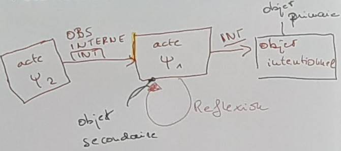
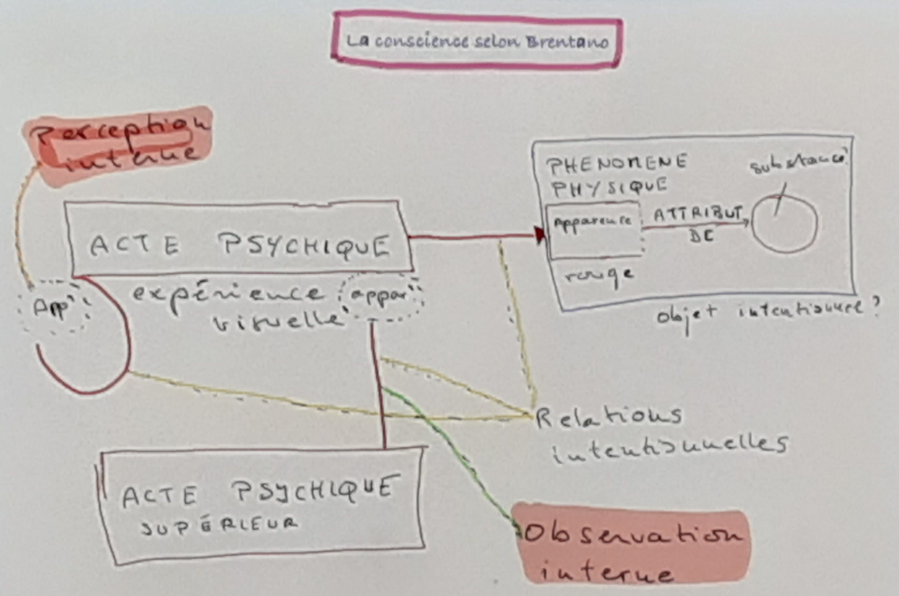
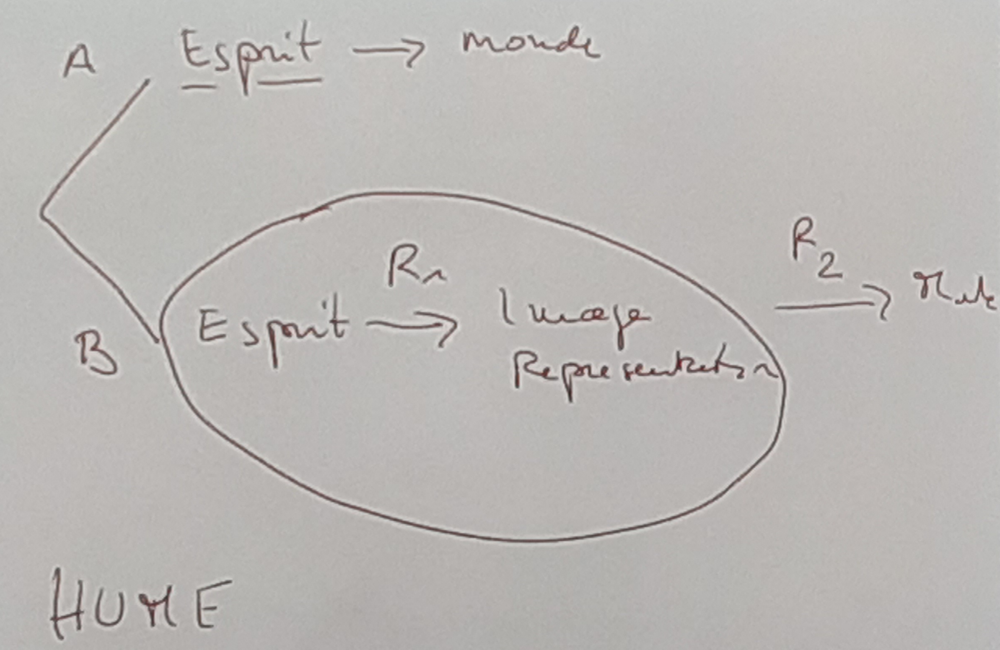

Notizen
Kontext#
Entstehung empiristischen Wissenschaften Mitte des 19. Jahrhunderts deren Gegenstände auch von der Philosophie untersucht werden.
Fechner : Dimension l'amplitude d'un stimulus physique en relation avec l'amplitude d'une réaction psychique. -> Dimension minimale ; mathematisch beschrieben. Le résultat est Independent de la mesure. -> objective -> reproduzierbar.
La méthode de l'introspection#
- Central de la phénoménologie.
Brentano#
Einführung#
1878 : Psychologie vom empirschen Standpunkt (Hauptwerk)
Bretano était un Thomist. -> Hat versucht Aristoteles mit seiner subjektiven decartschen Philosophie zu vereinbaren.
2 grand thèmes inventé :
-
thèse de la intentionalité de la conscience
-
Les actes de conscience sont lui-même conscient
Introduction de la thèse de la intentionalité de la conscience#
-
Intentio (latein) = avoir une direction.
-
Tous acts de conscience porte sur quelque chose / on une rapport de quelque chose ; ont a toujours un Object.
-
Une rélation particulière qui caracterise la conscience.
-
Les objectés peut être inexistence : J'ai peur de diable.
-
L'Object peut être dans notre conscience.
-
Les actes de conscience sont lui-même conscient
-
L'acte conscient porte sur l'Object extérieure, mais aussi sur lui-même.
Application#
La théorie de l'émotion donne la base pour son philosophie éthique. -> Conscience réflexive.
Distinction de la psychologie empirique#
-> Métaphilosophie
Philosophique scientifique. Recherche rigoureux et scientifique. (en réaction de la philosophie qui étais louche (Hegel, Fichte, Schelling,...) Rigoureux mais pas empirique.
4 phases de l'histoire de la philosophie#
-
Science : Purement théorique. Formulation des hypothèses qui sont après prévue Ça sera quoi ?
-
Pratique populaire : La philosophie apporte sa propre utilité
-
Conséquence de la ph. Pratique : Scepticisme
-
Spéculation sans aucun fondement. -> Hegel et son héritage.
Brentano se voie est dans une phase de récomendenncement. -> ça sera quoi ?
Méthode Naturaliste#
Les vérités des base sont fondé empirique.
(Ça nous donne un outil pour demander des questions à Brentano. ( ?))
3 conceptions de la philosophie :
-
La philosophie est une discipline théorique. -> Brentano
-
Conception existentiellement : La philosophie n'apporte pas seulement à la connaissance mais aussi à la sagesse
-
Ni l'un ni l'autre.... Anesthétique... ( ?)
Spécificité de la philosophie théorique:
-
Porte sur un Object philosophique
-
Méthode
Brentano : Il n'existe pas des « synthetische Urteile a priori ».
Analyse conceptuelle#
- Définition de la connaissance (Chishom) :
« La connaissance est une croyance vraie justifiée. » Ce qui est un droite est une analyse de ce qui on veux toujours dire (avec le concept)
-
Détermine si on peut trouver une description de fait qui son décrire une chose avec une vocabulaire plus fondamental. ( ?) (Jackson) Elle nous offre une voie de savoir quel sont les vérités plus fondamentales.
-
Exemple métaphysique (Russell) : Analyse logique :
-
« Scott is the autheur of Waverley »
-
"Il y a une entité c telle que l'... « x est l'auteur de Waverley » est vrai si x est c e autrement faux ; et c est Scott.
-
2 est plus fondamental que 1. 1 est vrai « en vertu » de 2.
- Leibniz :
1. «Cesar a travers le Rubicon en 49 aC. (C'est une vérité contingente)
2. La volonté de Dieu c'est de créez le MMP, et ....
-> La réalité dépend de la volonté de dieu. La volonté est plus fondamentale\ que la réalité. C'est une fondement métaphysique.
Les phrases rose décrit des faites naturelles.
Méthode a priori (sans faire des recherche empirique)#
N'est pas fait empirique, mais en réflexion.
Ryle (The concept of mind):
-
N imagine P
-
N est disposé de faire L si ....
-
Neurone dans le cerveau de N ...
Rückblick#
Naturalisme a priori#
-
Les faites fondamentales peuvent être décrit par / sont (?) des faites naturelles
-
Adopte l'analyse conceptuel
-
La relation entre analysant et analysandum est faite par la réflexion ; sans d'aide d'expérience empirique
-
Le réaliste croix que les deux phrases (analysant et analysandum) sont littéralement vraies.
Naturalisme a posteriori#
-
L'analyse (conceptuel) dépend des évidences empiriques
-
"Philosophy is philosophy of science, enough"; « Travail de flics »...
Position anti-realism#
-
Des énoncés normatifs comme « il ne faut pas mentir » sont des expressions de sentiment -> « expressivism »
-
Pas seulement vrai pour des énoncés moraux ; Il existe des philosophes qui pense ça des toutes des énoncés
-
Michael Dummett :
Analyse conceptuelle chez les expressivist ?#
(1) Il est mauvais de mentir.
(1*) Il ne faut pas mentir.
(2) Mentir est F.
- Non
(1) N juge que mentir est mauvais
(2) N a une attitude x à l'egarde du mensonge.
(2) est plus fondamentale que (1) et (1*)
Philosophie transcendantale vs. Cartésienne#
Des autres façons à voir la spécificité de la philosophie, qui ne sont pas fondé sur l'analyse conceptuel :
-
Intuitives
-
Évidentes
-
Synthétique a priori (= transcendantale)
Vérités intuitives#
-
Des propositions qui nous apparences vraies par le simple fait à les comprendre
-
Pas confronter des vérités intuitives avec des vérité perceptuel
-
Vérité analytique :
(1) Tous les triangles ont 3 angles
-
Il suffit le comprendre pour sait qu'il est vrai
-
Cette préposition est intuitivement vraie
-
Elijah Chudnoff : Des vérités intuitive se constitue des 2 choses :
-
La saisir de la préposition
-
Ce qui le rentre vrai
-
Cogito, Sum : Il y a une intuition à voir la vérité du sum par la simple faite que je pense ; ce n'est pas une conclusion ! Et non plus une vérité analytique ; le concept de penser ne contient pas le concept de l'existence. Considère ce préposition (cognito) et la vérité de l'existence est intuitivement inclus ; je me rentre existent en pensant. C'est une vérité fondamentale ; une vérité plus stable
-
Est-ce que je peux me tromper avec des prépositions intuitives ? L'intuitivité n'implique pas l'infaillibilité.
-
Les vérités intuitives sont pas forcement nécessaire.
Des vérités intuitives vs vérités évident#
-
Intuitive : On ne pas saisir des prépositions intuitives sans voir qu'ils sont vrai
-
Évidence : Dépend de la situation épistémique :
- Quand vous voyiez un cochon, la question « est-ce qu'il a des cochon autour vous » est réglé ; c'est évident.
-
Évidence subjective
Kausalität#
-
Relation entre deux evenement
-
Obtenir par Observation de notre expérience
-
Fondé sur évidence interne
Introspection#
-
Une façon typique d'étudier la conscience ?
-
Perception interne « Innere Wahrnehmung »
Caractère subjective de la conscience#
-
Accès uniquement de la premier personne
-
Une perception externe (3eme personne) comme la psychologie empirique ne peux accès ce caractère subjective
Distinction entre perception interne et observation#
« Innerre Wahrnehmung» vs.» Interne Beobachtung »
Observation : certain distance
1. 2 types de phénomène de la conscience#
a) Psychiques -> Intentionnels : Il porte sure quelque chose (des actes)
b) Physiques -> apparences
Exemple : Voir c'est un acte psychique ; il porte sur qq chose. Les différentes formes de ce que je vois forme le phénomène physique
2. Tout phénomène / acte psy est donné dans la perception interne#
- Pers
3. L'observation interne n'est pas essentielle aux actes psychiques#
- Non : tous les actes psy sont données à l'observation interne.
4. Rien ne peut être donné à l'observation interne de la même façon qu'à la perception interne.#
- L'observation interne d'un phénomène psychique change le phénomène ; la perception ne le change pas.
5. 2 façons d'être conscientes d'un acte psychique :#
- Je suis conscient (p) , de x
- Je suis conscient (o), de x.
6. Il n'existe pas des actes psychiques inconscient.#
-
Ils ne sont peut-être pas observés, mais ils sont donnés à la perception interne
-
Freud n'a pas compris...
7. Observation est un acte psychique supérieur que l'acte sur quel il porte.#
- Dans la perception interne l'acte psychique porte sur lui-même ; il est réflexif.
{width="6.102362204724409in" height="2.7009667541557305in"}
Intentionnalité#
Une relation assymetrique
Si un objecte dans la relation normale n'existe plus, il n'y a plus relation.
Dans la relation intentionnelle n'est pas comme ça ; par Example : je désire quelque chose qui n'existe pas (encore)
Exemple souvenir#
 {width="5.791666666666667in"
height="2.6770833333333335in"}
{width="5.791666666666667in"
height="2.6770833333333335in"}
Problème intrinsèque#
-
Toute conscience est intentionnelle = conscience de qqch.
-
S est conscient de la table.
-
S est conscient de son Y1. (Expérience psychique)
-
Y1 est intrinsèquement conscient
-
Donc : être objet de conscience intentionnelle = ! Être intrinsèquement conscient.
-
Brentano : Donc Y1 est conscient de Y1 de façon réflexive.
Schema des actes psychique#
{width="6.268055555555556in" height="4.157638888888889in"}
Différentes relations#
-
Observation interne : la relation entre un acte psychique supérieur et acte psychique
-
Perception interne : La relation de l'acte avec lui même
-
Relations intentionnelles : Relation entre acte psychique et l0objet intentionnelle
Autre points#
-
Substance : ce qui porte ça qui apparait dans l'acte psychique (Das Grüne, Das Viereckige)
-
Tout actes psychiques est donné dans la perception interne ; c'est la signification d'être conscience.
-
L'acte psychique est totalement identique avec la façon qu'il apparat. (La réflexion
-
Dans l'observation interne cependant il y a une telle distinction ; ceci est une des raisons qui sont à la base du fait que l'observation interne est faillible, alors que la perception interne est infaillible.
-
Ce qui fait un acte conscient c'est intrinsèque
La perception internent livre des évidences qui engèrent la certitude#
Supposons que S croit :
- Je pense/vois/désire
Sur la base de
- Sa conscience interne du fait qu'elle voit/pense/désire.
Alors
a. Le fait (2) rend la probabilité de (1) maximale ;
b. Dans la mesure que S croit (1) sur la base de (2) (S considère que (2) est la raison pour croire (1), S possède une raison indétrônable (undefetable) et infaillible pour croire (1)
-
Les jugements basés sur la perception internent sont évident
-
(1) est un jugement qui porte sur une expérience perceptuelle
-
Quelle est la base épistémique du jugement ?
-
La phénoménologie a comme but décrire les perceptions interne et ...
-
La phénoménologie s'intéresse à la façon que la conscience s'exprime

Intentionnalité (S. 115)#
-
L'Object est contenue dans l'acte :
-
« Présence intentionnelle »
-
« Objectivité immanente »
-
« Contenir en soi »
-
L'Object ne doit pas exister / être réel
-
L'acte contient une direction sur Object (dans une relation ?)
-
Les trois thèses ne pas être vrais en même temps.
2 théories#

-
Les images / représentations, selon Hume, sont partie de l'esprit (B)
-
Ce qui m'est donné c'est la représentation (B)
-
Selon Brentano il y n'a pas intermédiaire entre esprit et monde. (A) Mais comment il résoudre ce problème, dans le cas d'un objecte intentionnelle non-existentiel, d'avoir une relation sans relata ?
Differenz zwischen Désir singulier und désir généeral#
- Désir singulier: ich will diesen einen Bären Teddy -> haecceitas
- Désir géneral: Es ist ok, wenn ich einen Bären bekomme, der in allen Aspekten von Teddy nicht unterscheidbar ist.
- Brentano glaubt, dass es eine singuläre Inteionlität gibt.
Leibniz Monaden#
Identité des Indiscernables: - Deux objects doives se differencier qualitiativement; il n'y a pas deux monades identiques. - Gott macht nichts ohne Grund; es gibt keinen Grund zwei identische Objekte zu kreieren.
Le Probème de l'intenSionalité#
- Les états intentionnels en ou contexte intensionnel
- Dans les contextes intenSionnels les termes ne sont pas tous substituables salva veritable (s.v.)
Deux termes ou expressions linguistiques sont coréférentiels quand ils font référence de mene ...
Contexte intensionnel#
- a = b
- K est un contexte dans lequel les 2 termes apparaissent.
- K est extensionnel ssi: Ka <-> Kb
- K est intensionnel ssi: !(Ka <-> Kb)
Beispiele#
- Jean = le seul frère de Marc
- Anne croit que Jean est grand
-
Anne ne croit pas que le seul frère de Marc est grand. -> Pas de contradiction, si Anne ne ne savait pas que Jean est le seoul frère de Marc.
-
Le vent cause l'avalanche
- Le vent cause la descente de la neige
-
avalanche = descente de la neige
-
Mon intention de aller skier a causé ma descente à ski
- Mon intention de aller skier a causé ma commotion cérébrale.
-> Anscombe - Truth under a description
Theorie de jugement chez Brentano#
- Platon = élève de Socrate = l'aut. de la Rép.
- Jean croit que Platon est sage.
- Jean croit que l'élève de S. est sage.
-
Jean croit que l'auteur de la Reb. est sage.
-
Le contexte intentionell est crée par le "croit"
- Si Jean ne connais pas 1, ce n'est pas forcement dit que 2-4 sont vrais.
Brentano:
2b. Jean accepte l'object complex (Sagesse qui contient Platon) 3b. Jean accepte l'object complex (Sagesse qui contien l'élève de Socrate) 4b. Jean accepte l'object complex (Sagesse qui contien l'auteur de la Rép.)
-> Jean accepte 3 objects differents. (C'est trois attributes differents.) - L'object chez 3 peux transformer en: Sagesse qui contien l'élève de Socrate, qui contien Platon. Item avec 3b.
-> Méreologie
Mitgeltende Dokumente#
Brentanos Unterteilung in intentionale und reele Objekte (?)#
3 attitude pour comprendere: - Distinquer des identiques relative des identiques absolue - objects intentionel sont comme objects fictionnels - objects intentionls sont des objects possible
A = B = C Ai != Bi != Ci
Relation entre Identité et Constitution#

-> Distinquer des identiques relative des identiques absolue
Objets fictionnels#
des objets intentionel sont pas des objects réesls, c'est comme des objects fictionnels.